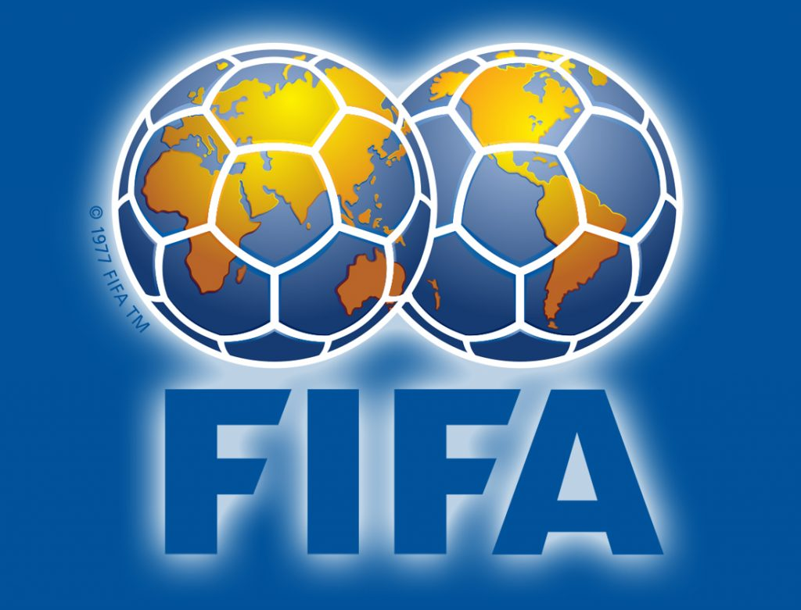

La FIFA define el fútbol como un deporte de equipo en el que dos conjuntos de 11 jugadores compiten por marcar goles en la portería contraria.
Caracteristicas del Futbol
- Se juega en un campo rectangular de césped
- Cada equipo tiene un portero, defensores, volantes y delanteros
- El objetivo es meter la pelota en la portería contraria
- El equipo que más goles marque gana
- Los jugadores pueden usar cualquier parte del cuerpo, excepto las manos y los brazos
- El portero es el único jugador que puede tocar el balón con las manos, pero solo dentro del área penal

El fútbol es un deporte de equipo, pero las individualidades pueden decidir un partido, decantar una temporada o definir una era. Un equipo y las personas que lo componen mejoran y se refuerzan cuando conocen las cualidades que definen a los jugadores determinantes.